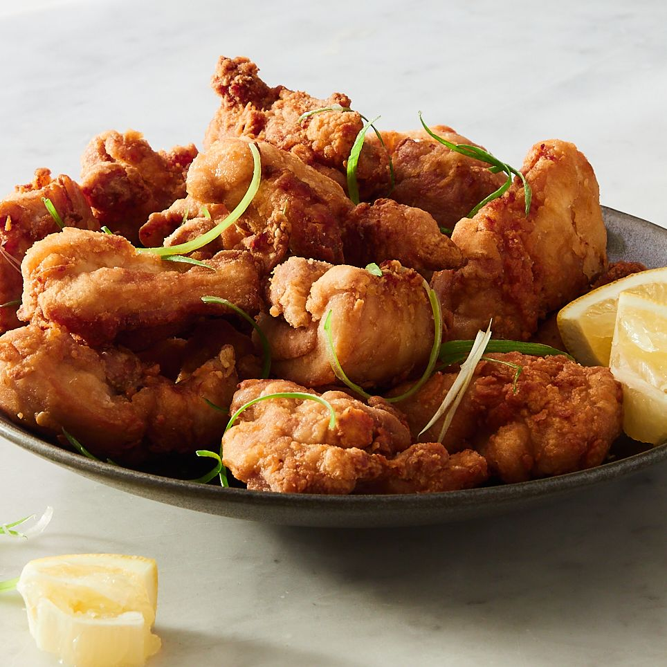

Karaage

Description
Chicken meat wrapped in bread crumbs, deep fried till golden brown. Outside is crunchy, inside is juicy.
Ingredients
- 2 pieces of chicken leg meat
- 8 shishito peppers
- Reasonable amount of potato starch
-
A
- Quarter cup of so sauce
- 1 tablespoon of sake
- 1 tablespoon of mirin
- 1 teaspoon of sugar
- 1 teaspoon of grated garlic
- 1 teaspoon of chili oil
- A bit of salt
- Half a lemon
- Reasonable amount of cooking oil
Instructions
- Line up 4 or 5 the shishito pepper and punch a whole near the top using skewers. This prevents the pepper from exploding during the frying process.
- The contents of A will become marinade. Take the soy sauce, sake, mirin, sugar, grated garlic, and chili oil and mix them well in a bowl.
- Take the chicken meat and lay them skin side down. Cut them along the fibre 4-6 times, and then cut them perpendicular to the fibre 4-6 times.
- Take the marinade from step 2 and mix the chicken meat in it. Marinate for 10 min and then flip and marinate another 10 min.
- Remove the chicken from the marinade and let dry be putting it in a strainer. Do not dry with paper towel as this will remove umami.
- Roll the chicken in potato starch until the chicken is completely white.
- Fill the pan until it is 1-2cm deep in cooking oil and heat to 160cm. Put the chicken in 1 by one. Let fry until light browning. This should take around 2 min and 30 sec.
- When the surface has hardened, flip the chicken. Let fry again until golden brown. This should take around 1 min and 30 sec.
- When checking the chicken, use the last piece placed in the pan.
- After removing the chicken, use the remaining oil to fry the shishito peppers. Salt lightly and place on with the chicken along with a slice of lemon.